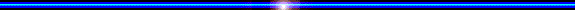
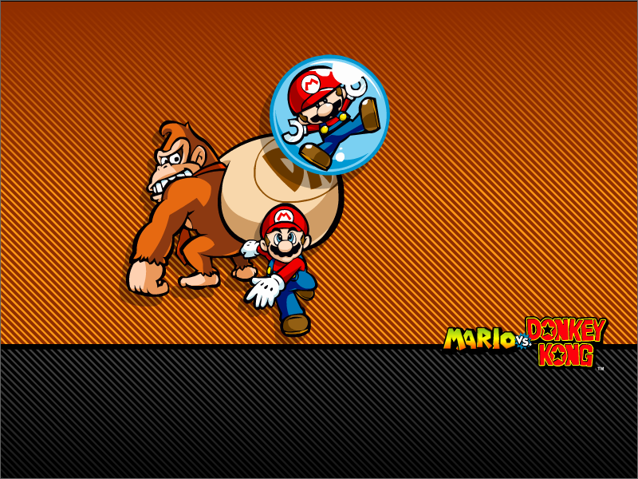

Screensavers

Mario Party 2
Archived from an old version of Nintendo of Norway's website (nintendo.no).
Originally from nintendo.de

DOWNLOAD
.exe file zipped (1.71 MB)
Mario Kart: Double Dash!!

DOWNLOAD
.exe file zipped (Windows) (995 KB)
file packaged (Mac OS 9) (1.8 MB)
file packaged (Mac OS X) (1.68 MB)
Mario Kart DS

DOWNLOAD
.exe file zipped (Windows) (5.52 MB)
file packaged (Mac) (5.44 MB)
Mario vs. Donkey Kong

DOWNLOAD
.exe file zipped (Windows) (1.02 MB)
file packaged (Mac) (2.09 MB)